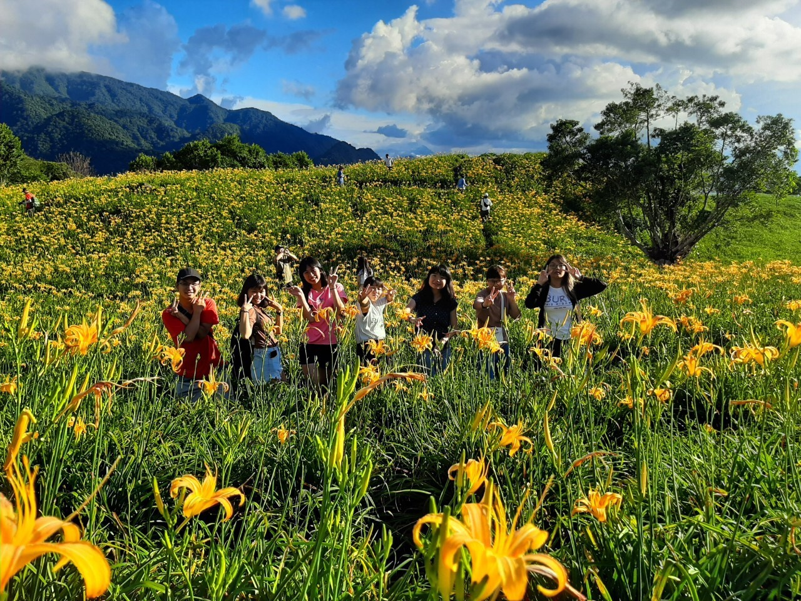

Jin Jin Jin的介紹
姓名:王詠鑫
綽號:Jin Jin Jin
興趣:游泳、慢跑、聽音樂
喜歡的科目:生物、化學
未來想做的事:充滿熱忱的老師
我出生於一個小康的家庭。我的爸爸在做與電子相關的工作，我的媽媽是位國小老師，家裡還有小我五歲的弟弟。
從小，我的父母以民主的教育方式教導我們。父母願意讓我去摸索嘗試，讓我自由學習我喜歡的東西。
不知是否是潛移默化的緣故，當我還處於幼小階段的年紀就很喜歡站在講台上對著空無一人的台下比畫講課，
彷彿自己是一位學識豐富、懷有滿腔熱忱的國小老師。而我的嗜好就是運動特別喜歡慢跑。慢跑是我最常紓壓的方式，在慢跑過程中我喜愛思考問題。生活在繁忙的腳步中那是我唯一可以靜下心單獨與自己對話的空間。
